18. Modely reálnej otvorenej ekonomiky#
18.1. Bilancie so zvyškom sveta#
Najdôležitejšou tokovou bilanciou krajiny voči zvyšku sveta je (Bežný účet platobnej bilancie) \(CA\), ktorý pozostáva z čistého vývozu \(X\) (Čistý vývoz), čistých príjmov faktorov zo zahraničia \(NFI\) (Čisté príjmy faktorov zo zahraničia (NFI)) a čistých unilaterálnych príjmov zo zahraničia \(NUT\) (Čisté unilaterálne príjmy zo zahraničia (NUT)). Túto bilanciu zachytáva identita sustému národných účotv (10.1):
Pojmy
V modernej terminológii platobnej bilancie sa NFI označujú ako primárne dôchodky (Primary Income).
Čisté príjmy faktorov zo zahraničia možno rozložiť na čisté pracovné príjmy zo zahraničia \(NLI\) a čisté investičné príjmy zo zahraničia \(NII\),
(def_NIIP)
- Čistá medzinárodná investičná pozícia
Čistá medzinárodná investičná pozícia je peňažne vyjadrený rozdiel medzi všetkými zahraničnými aktívami, ktoré vlastnia domáci rezidenti, a všetkými domácimi aktívami, ktoré vlastnia zahraniční rezidenti.
Na rozdiel od bežného účtu, ktorý je tokovou veličinou meranou za určité obdobie, čistá medzinárodná investičná pozícia je stavová veličina meraná k určitému dátumu.
Čistá medzinárodná investičná pozícia \(NIIP\) sa bude zväčšovať, ak domáce úspory prevyšujú domáce investície. Podľa (10.4) taká situácia nastane, ak bežný účet platobnej bilancie \(CA\) je kladný. Naopak, ak \(CA<0\), čistá medzinárodná investíčna pozícia \(NIIP\) bude klesať.
Prebytok bežného účtu nie je jediným zdrojom zmien čistej medzinárodnej investičnej pozície. NIIP sa môže meniť aj v dôsledku zmien trhovej hodnoty aktív a pasív. Hodnota aktív je daná cenou, pri ktorej sa aktíva obchodujú na finančných trhoch. Táto cena sa priebežne mení.
Zmena čistej medzinárodnej investičnej pozície \(NIIP\) sa rovná súčtu prebytku bežného účtu a úpravám hodnoty aktív. Časté zmeny hodnoty aktív sú spôsobené zmenami výmenných kurzov rôznych mien.
18.2. Bilancie so zvyškom sveta v slovenskej ekonomike#
Zdroj údajov
Pokiaľ nie je uvedené inak, zdroj všetkých časových radov použitých v tejto kapitole je Eurostat [Eurostat26]
Slovensko je malá otvorená ekonomika, vo veľkej časti závislá na zvyšku sveta. Mnoho spotrebovaných komodít potrebujeme doviezť, hlavne uhlovodíky ako ropu a zemný plyn. Slovensko vyváža napríklad autá a ďalšie komodity.
Miera otvorenosti ekonomiky je podiel súčtu vývozu a dovozu na HDP. Časový rad miery otvorenosti slovenskej ekonomiky je na Obr. 18.1. Na začiatku skúmaného obdobia bola miera otvorenosti približne 80 %. Postupnou integráciou slovenskej ekonomiky do európskych hospodárskych štruktúr sa miera otvorenosti viac než zdvojnásobila. Pred energetickou krízou aj po nej ojedinele presahovala 180 %.
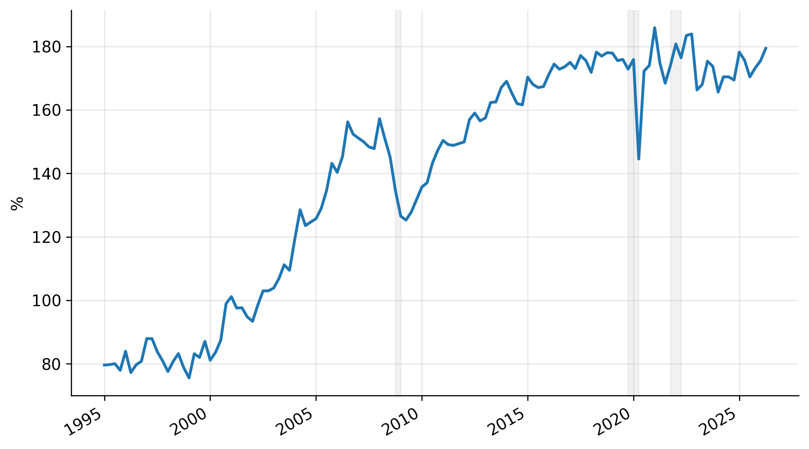
Obr. 18.1 Miera otvorenosti slovenskej ekonomiky#
Zdroj: vlastné spracovanie na základe údajov Eurostatu.
Slovensko patrí medzi najotvorenejšie ekonomiky Európskej únie. Vývoj hospodárstva je preto výrazne ovplyvnený zahraničným dopytom, cenami dovážaných komodít a ekonomickou situáciou obchodných partnerov.
Časový rad čistého vývozu je na Obr. 18.2. Na začiatku skúmaného obdobia boli na Slovensku deficity obchodnej bilancie. Po vstupe slovenskej ekonomiky do Európskej menovej únie a po globálnej finančnej kríze nasledovalo obdobie približne vyrovnanej obchodnej bilancie s občasnými prebytkami. Po energetickej kríze je slovenská obchodná bilancia v prebytku.
Kladný čistý vývoz znamená, že hodnota vývozu prevyšuje hodnotu dovozu. Krajina tak vo vzťahu k zahraničiu dosahuje obchodný prebytok.
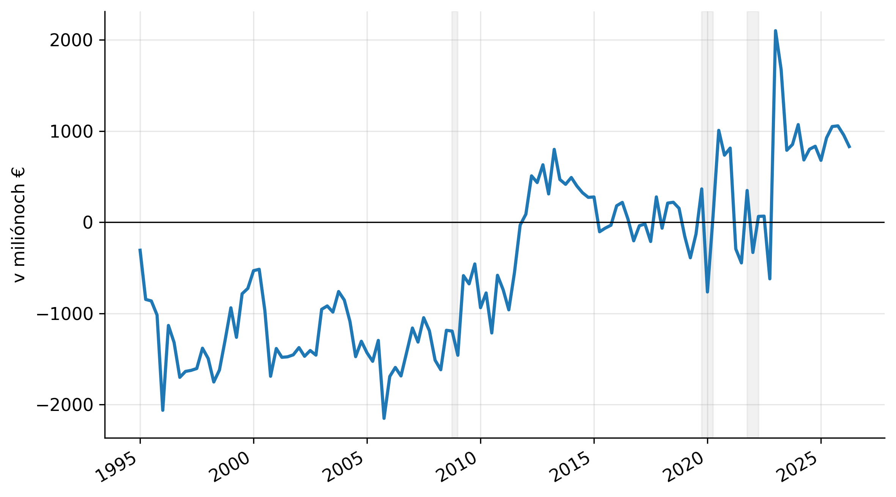
Obr. 18.2 Čistý vývoz v slovenskej ekonomike#
Zdroj: vlastné spracovanie na základe údajov Eurostatu.
Na Obr. 18.3 je zobrazený bežný účet platobnej bilancie spolu s jeho zložkami. Časové rady začínajú rokom 2004.
Na grafe si možno všimnúť, že bežný účet platobnej bilancie \(CA\) dlhodobo viac-menej kopíroval čistý vývoz \(X\). Oba rady sa začali výraznejšie rozchádzať po pandemickej kríze. V dobe písania kapitoly (jeseň 2026) je bežný účet v deficite, aj keď obchodná bilancia je v prebytku.
Dôležitou príčinou rozchodu medzi \(CA\) a \(X\) boli čisté príjmy faktorov zo zahraničia \(NFI\), ktorých deficit sa po pandemickej kríze výrazne prehĺbil. Slovensko je zároveň dlhodobo čistým platcom jednostranných transferov, takže \(NUT\) nadobúda prevažne záporné hodnoty. Zmeny v \(NUT\) sú však v porovnaní so zmenami \(NFI\) relatívne malé, a preto nemajú výrazný vplyv na vývoj bežného účtu platobnej bilancie.
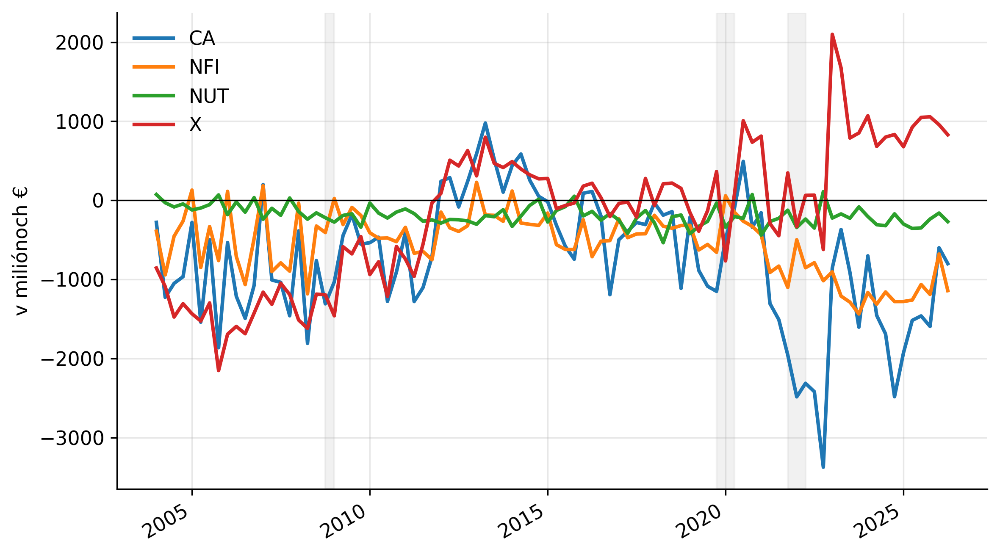
Obr. 18.3 Bežný účet platobnej bilancie a jeho zložky#
Zdroj: vlastné spracovanie na základe údajov Eurostatu.
Na Obr. 18.4 sú čisté príjmy faktorov zo zahraničia \(NFI\) a ich zložky: čisté pracovné príjmy zo zahraničia \(NLI\) a čisté investičné príjmy zo zahraničia \(NII\).
Čisté pracovné príjmy zo zahraničia \(NLI\) sú počas celého sledovaného obdobia kladné a vykazujú rastúci trend. Tento vývoj odráža skutočnosť, že príjmy slovenských rezidentov pracujúcich v zahraničí dlhodobo prevyšujú pracovné príjmy zahraničných rezidentov pôsobiacich na Slovensku.
Naopak, čisté investičné príjmy zo zahraničia \(NII\) sú počas celého obdobia záporné. Slovenskí rezidenti vyplácajú zahraničným vlastníkom kapitálu viac dividend, reinvestovaných ziskov a úrokov, než naopak získavajú zo svojich zahraničných investícií. Po pandemickej kríze sa deficit čistých investičných príjmov výrazne prehĺbil.
Vývoj čistých príjmov faktorov zo zahraničia \(NFI\) je preto ovplyvňovaný najmä čistými investičnými príjmami \(NII\). Kladné pracovné príjmy zo zahraničia síce časť deficitu investičných príjmov kompenzujú, ich veľkosť však na jeho vyrovnanie nestačí. Čisté príjmy faktorov zo zahraničia sú preto dlhodobo záporné.
Prehĺbenie deficitu \(NFI\) po pandemickej kríze vysvetľuje aj rozchod medzi čistým vývozom \(X\) a bežným účtom platobnej bilancie \(CA\), ktorý bol pozorovaný na Obr. 18.3. Hoci slovenská ekonomika po energetickej kríze dosahovala prebytky zahraničného obchodu, značná časť príjmov vytvorených v domácej ekonomike odtekala zahraničným vlastníkom kapitálu.
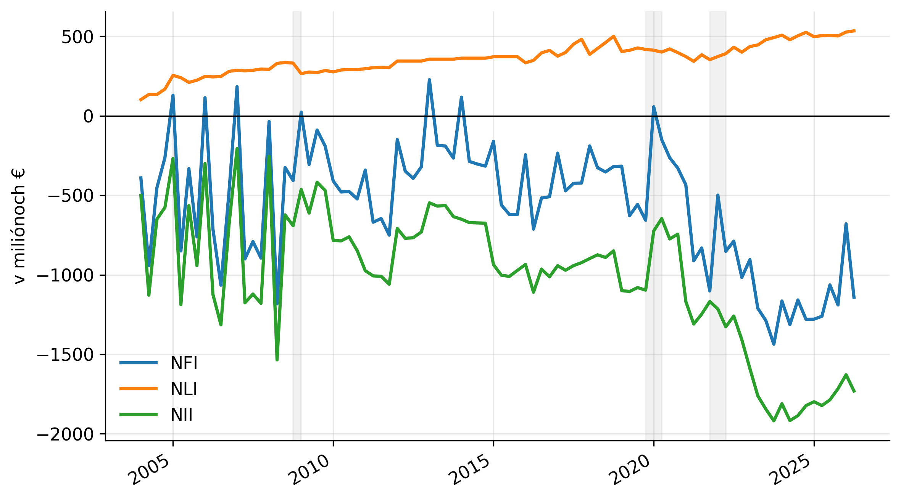
Obr. 18.4 Čisté príjmy faktorov zo zahraničia a ich zložky#
Zdroj: vlastné spracovanie na základe údajov Eurostatu.
Po pandemickej kríze sa deficit čistých investičných príjmov výrazne prehĺbil. Je pravdepodobné, že sa na tom podieľal rast ziskov zahranične vlastnených podnikov pôsobiacich na Slovensku. Zahraniční vlastníci mohli časť zvýšených ziskov previesť do zahraničia vo forme dividend alebo reinvestovaných ziskov. Svoje pôsobenie mohol mať aj rast svetových úrokových mier, ktorý zvýšil úrokové platby smerujúce do zahraničia. Samotný graf však neumožňuje určiť relatívny význam jednotlivých faktorov.
Zahraničný kapitál a čisté investičné príjmy
Dlhodobo záporné čisté investičné príjmy zo zahraničia sú konzistentné s významným podielom zahraničného kapitálu v slovenskej ekonomike. Časť ziskov vytvorených v domácich podnikoch je vyplácaná zahraničným vlastníkom vo forme dividend, reinvestovaných ziskov alebo úrokových platieb.
Prílev zahraničných investícií mohol prispieť k rastu produktivity, exportnej výkonnosti a zamestnanosti slovenskej ekonomiky. Súčasne však vytvára mechanizmus, prostredníctvom ktorého časť dôchodkov vytvorených na Slovensku odteká do zahraničia. Tento jav sa prejavuje práve dlhodobo zápornými čistými investičnými príjmami zo zahraničia.
Na Obr. 18.5 je čistá medzinárodná investičná pozícia Slovenska. Počas celého sledovaného obdobia je záporná, čo znamená, že hodnota domácich aktív vo vlastníctve zahraničia prevyšuje hodnotu zahraničných aktív vo vlastníctve domácich rezidentov.
Od roku 2004 do obdobia po globálnej finančnej kríze sa záporná čistá medzinárodná investičná pozícia výrazne prehĺbila. Jedným z dôvodov boli opakované deficity bežného účtu platobnej bilancie. Deficit bežného účtu znamená, že domáce investície prevyšujú domáce úspory a rozdiel je financovaný zo zahraničia. Výsledkom je rast pasív voči zahraničiu a pokles čistej medzinárodnej investičnej pozície.
Po pandemickej kríze sa čistá medzinárodná investičná pozícia opäť výrazne zhoršila. Tento vývoj mohol súvisieť s pretrvávajúcimi deficitmi bežného účtu, ale aj so zmenami trhovej hodnoty finančných aktív a pasív. K zmenám čistej medzinárodnej investičnej pozície prispievajú okrem tokov zachytených v bežnom účte aj oceňovacie efekty, napríklad zmeny cien akcií, dlhopisov alebo výmenných kurzov.
Záporná čistá medzinárodná investičná pozícia pomáha vysvetliť aj dlhodobo záporné čisté investičné príjmy zo zahraničia na Obr. 18.4. Keďže významná časť kapitálu používaného v slovenskej ekonomike je vo vlastníctve zahraničných investorov, časť dividend, reinvestovaných ziskov a úrokových príjmov pravidelne odteká do zahraničia.
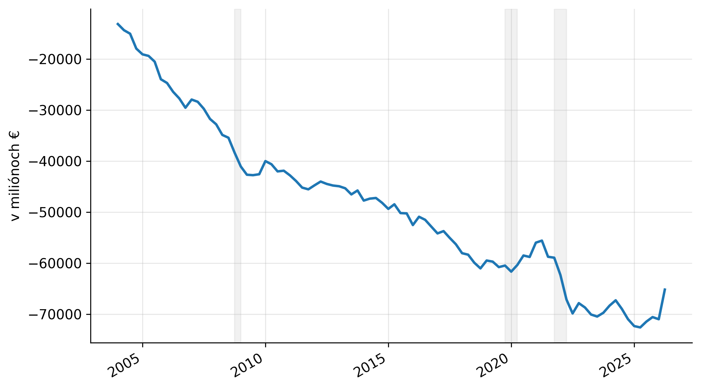
Obr. 18.5 Čistá medzinárodná investičná pozícia#
Zdroj: vlastné spracovanie na základe údajov Eurostatu.
18.3. Cyklické charakteristiky čistého vývozu a bežného účtu platobnej bilancie#
Skúmali sme cyklické charakteristiky časových radov čistého vývozu a bežného účtu platobnej bilancie podelených trendovou zložkou HDP, ktorú sme získali log-kvadratickým trendom (13.24).
Cyklické zložky sme z týchto časových radov získali kvadratickým trendom. Ich priebeh je na Obr. 18.6 a Obr. 18.7. Podľa sumárnej tabuľky na Obr. 18.8 konštatujeme, že čistý vývoz je acyklický a bežný účet platobnej bilancie mierne kontracyklický.
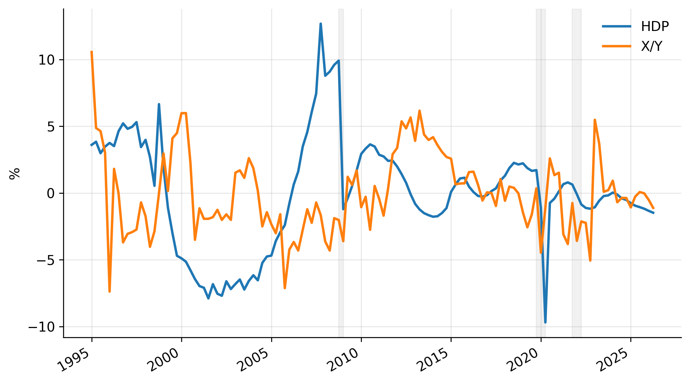
Obr. 18.6 Cyklické zložky HDP a čistého vývozu v slovenskej ekonomike#
Zdroj: vlastné spracovanie na základe údajov Eurostatu.
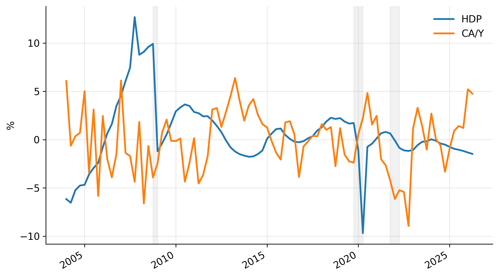
Obr. 18.7 Cyklické zložky HDP a bežného účtu platobnej bilancie v slovenskej ekonomike#
Zdroj: vlastné spracovanie na základe údajov Eurostatu.
Obr. 18.8 Cyklické charakteristiky čistého vývozu a bežného účtu platobnej bilancie v slovenskej ekonomike#
Zdroj: vlastné spracovanie na základe údajov Eurostatu.
V tejto kapitole ukážeme, prečo býva bežný účet platobnej bilancie kontracyklický a ktoré ekonomické mechanizmy ovplyvňujú bilancie so zvyškom sveta.
18.4. Model otvorenej prídelovej ekonomiky#
Uvažujme prídelovú ekonomiku z kapitoly (Spotrebiteľské rozhodovanie medzi súčasnosťou a budúcnosťou). Okrem spotrebiteľov a vlády uvažujeme o zvyšku sveta (zahraničí).
Pripomeňme, že v ekonomike každý spotrebiteľ rieši úlohu (8.11) vzhľadom na (8.7) a (8.12).
V redukovanom tvare súčasná a budúca spotreba a úspory závisia od úrokovej miery a životného bohatstva (8.15), (8.16) a (8.17). Životné bohatstvo závisí od súčasnej hodnoty tokov spotrebiteľových disponibilných príjmov (8.8).
Spotrebiteľ usiluje vyhladiť svoju spotrebu v čase. Koncept spotrebného vyhladenia zodpovedá Friedmanovej hypotéze trvalého príjmu (Friedmanova hypotéza trvalého príjmu)
Ak sa spotrebiteľovi zvýši súčasný disponibilný príjem \(y-t\), zvýši súčasnú spotrebu a úspory. Reakciu súčasnej spotreby na zmenu príjmu nazývame Hraničný sklon k spotrebe.Analogicky nazvime reakciu úspor na zmenu disponibilného príjmu hraničným sklonom k úsporám. Pri dočasnej zmene \(y-t\) je hraničný sklon k spotrebe aj hraničný sklon k úsporám kladný a menší ako \(1\). Ak je spotreba v čase konštantná a platí (2.11), ich súčet sa rovná \(1\).
Ak spotrebiteľ očakáva zvýšenie disponibilného príjmu v budúcnosti \(y'-t'\), zvýši súčasnú spotrebu a zníži súčasné úspory. Ak platí (2.11), súčet reakcie spotreby a úspor na zmenu budúceho príjmu sa rovná \(0\).
Ak sa spotrebiteľovi trvalo zvýši príjem v oboch obdobiach \(y-t\) aj \(y'-t'\) hraničný sklon k spotrebe sa rovná \(1\) a hraničný sklon k úsporám sa rovná \(0\).
Spotrebiteľova reakcia na úrokovú mieru \(r\) závisí od príjmového a dynamického substitučného efektu. Ak predpokladáme, že dynamický substitučný efekt prevyšuje príjmový, spotrebiteľ zníži súčasnú spotrebu, ak sa zvýši úroková miera.
Podobne ako v časti Model prídelovej ekonomiky a nedokonalosti na finančných trhoch, v ekonomike je \(N\) identických spotrebiteľov. Agregovanými premennými sú HDP (12.1), (12.2),
čisté daňové príjmy (12.6), (12.7),
a úspory (12.5)
Charakteristika |
Hodnota |
|---|---|
Počet subjektov |
\(N+2\) |
Subjekty |
Spotrebitelia, vláda, zahraničie |
Počet období |
2 |
Typ prostredia |
Dynamické |
Počet trhov |
2 |
Trhy |
Trh produktov, trh dlhopisov |
Vládu charakterizujeme ohraničeniami (12.8), (12.9) a (12.10).
Vláda aj spotrebitelia majú prístup na svetový trh dlhopisov, na ktorom obchodujú medzi sebou aj so zahraničím.
Predpokladáme, že domáca ekonomika je vo svetovom hospodárstve taká malá, že spotrebitelia ani vláda nedokážu ovplyvniť svetovú úrokovú mieru. Domáca úroková miera sa preto rovná exogénnej svetovej úrokovej miere
18.5. Konkurenčná rovnováha#
- Konkurenčná rovnováha
Pri danom slede vládnych nákupov \(\{G,G'\}\) a pri danej svetovej úrokovej miere \(r^*\) je konkurenčná rovnováha taká alokácia \(\{C,C'=Nc,Nc'\}\), že
spotrebitelia sa správajú racionálne; riešia úlohu výberom \(\{c,c'\}\) maximalizovať funkciu užitočnosti (8.2) vzhľadom na životné rozpočtové ohraničenie (8.7), podmienky nezápornosti (8.12) a svetovú úrokovú mieru (18.2),
vláda spĺňa svoje životné rozpočtové ohraničenie (12.10),
finančný trh a trh produktov sú v rovnováhe.
18.5.1. Rovnováha na trhoch#
Na rozdiel od zatvorenej ekonomiky nemusia byť v otvorenej ekonomike národné úspory nulové.
Úspory spotrebiteľov definujeme sú (12.5)
Rozdiel medzi čistými daňovými príjmami a vládnymi nákupmi \(T-G\) predstavuje úspory vlády.
Národné úspory sú súčet súkromných a verejných úspor \(S+T-G\). Národné úspory môžu byť kladné aj záporné.
Ak sú národné úspory kladné, domáce subjekty (spotrebitelia a vláda spolu) poskytnú prebytočné zdroje zahraničiu. Domáca ekonomika sa stane veriteľom a zahraničie dlžníkom. Domáci rezidenti nadobudnú zahraničné finančné aktíva a čistá medzinárodná investičná pozícia domácej ekonomiky \(NIIP\) sa zvýši.
Ak sú národné úspory záporné, domáca ekonomika spotrebúva viac zdrojov, než vytvára. Chýbajúce zdroje získa zo zahraničia. Domáca ekonomika sa stane dlžníkom a zahraničie veriteľom. Zahraniční rezidenti nadobudnú časť domácich aktív alebo poskytnú úvery domácim subjektom, čím sa čistá medzinárodná investičná pozícia domácej ekonomiky \(NIIP\) zníži.
Čistý vývoz je
Ak \(X>0\), domáca obchodná bilancia je v prebytku. Domáca ekonomika poskytuje zdroje zahraničiu a stáva sa čistým veriteľom. Prírastok čistých zahraničných aktív sa rovná \(X\).
Ak \(X<0\), domáca obchodná bilancia je v deficite. Domáca ekonomika využíva zdroje zo zahraničia a stáva sa čistým dlžníkom. Prírastok čistých zahraničných záväzkov sa rovná \(-X\).
Všimnite si
Keďže spotrebitelia na začiatku prvého obdobia nevlastnia žiadne finančné aktíva ani pasíva ((8.5)), čistá medzinárodná investičná pozícia domácej ekonomiky sa na začiatku prvého obdobia rovná
Z toho dôvodu sú v prvom období čisté investičné príjmy zo zahraničia nulové,
Model zároveň abstrahuje od medzinárodnej migrácie práce, preto platí
Keďže
v prvom období dostávame
Bežný účet platobnej bilancie sa preto v prvom období rovná čistému vývozu,
Na začiatku druhého obdobia bude čistá medzinárodná investičná pozícia
a čisté príjmy z investícií v druhom období budú
Agregovaný rozpočet všetkých spotrebiteľov v prvom období je
Kombináciou s vyjadrením čistého vývozu (18.3) a po úprave získame rovnováhu na trhu produktov
18.5.2. Identity SNÚ#
Rovnica rovnováhy na trhu produktov (18.4) je zároveň identita systému národných účtov, pričom v modeli prídelovej ekonomiky nie sú investície. Odvoďme ďalšie identity SNÚ.
Keďže v prvom období sa čisté príjmy faktorov zo zahraničia rovnajú \(0\) a model abstrahuje od čistých unilaterálnych transferov, výstup \(Y\) sa rovná agregovanému príjmu domácich rezidentov. Kombináciou (18.4) s vyjadrením vývozu (18.3) získame identitu rozdelenia národného príjmu
Bežný účet platobnej bilancie v prvom období pozostáva iba z obchodnej bilancie,
Dosadením za vývoz do (18.3) a preusporiadaním členov získame identitu úspor a investícií
Bežný účet platobnej bilancie sa preto rovná národným úsporám. Krajina s prebytkom bežného účtu poskytuje zdroje zahraničiu a stáva sa čistým veriteľom. Naopak, krajina s deficitom bežného účtu využíva zahraničné zdroje a stáva sa čistým dlžníkom.
18.6. Komparatívna statika#
Zaujíma nás vplyv zmien príjmu a svetovej úrokovej miery na bilancie so zahraničím.
Kľúčové je vyjadrenie čistého vývozu (18.3). Čistý vývoz sa rovná súčtu súkromných úspor \(S\) a verejných úspor \(T-G\). Pri nezmenenej exogénnej fiškálnej politike \(T,G\) sa čistý vývoz \(X\) bude meniť spolu so súkromnými úsporami \(S\).
Podľa (18.5) sa rovnako zmení aj bežný účet platobnej bilancie \(CA\). Zmena súkromných úspor vedie k rovnakej zmene čistého vývozu aj bežného účtu platobnej bilancie.
Bežný účet platobnej bilancie predstavuje prírastok čistej medzinárodnej investičnej pozície. Preto sa na začiatku druhého obdobia čistá medzinárodná investičná pozícia \(NIIP'\) zmení o rovnakú hodnotu, o akú sa zmení bežný účet platobnej bilancie v prvom období.
Pri nezmenej fiškálnej politike sa čistý vývoz \(X\), bežný účet platobnej bilancie \(CA\) a čistá medzinárodná investičná pozícia na začiatku druhého obdobia \(NIIP'\) zmenia o rovnakú hodnotu, o akú sa zmenia súkromné úspory \(S\).
Stačí nám zistiť, ako reagujú súkromné úspory \(S\) na šoky v príjme a úrokovej miere. Tým získame aj reakciu bilancií so zahraničím.
V ďalšom texte nebudeme pri každom šoku explicitne uvádzať zmeny \(X\), \(CA\) a \(NIIP'\). Keďže sa tieto veličiny menia rovnakým smerom, budeme hovoriť o zlepšení alebo zhoršení bilancií so zahraničím. Zlepšenie znamená rast \(X\), \(CA\) a \(NIIP'\), zhoršenie znamená ich pokles.
V modeli je \(N\) identických spotrebiteľov, ktorí majú rovnaký disponibilný príjem v oboch obdobiach \(y-t\) a \(y'-t'\). Zmeny disponibilného príjmu sa v komparatívnej statike realizujú rovnako pre všetkých spotrebiteľov. Preto budeme zmeny individuálnych disponibilných príjmov interpretovať agregovane prostredníctvom zmien \(Y-T\) a \(Y'-T'\).
Analogicky budeme individuálne reakcie spotrebiteľov vyjadrovať agregovane prostredníctvom zmien úspor \(S\).
18.6.1. Príjmové šoky#
Z mikroekonomického správania spotrebiteľov (Spotrebiteľské rozhodovanie medzi súčasnosťou a budúcnosťou) platia nasledovné pravidlá reakcií bilancií sa zahraničím na príjmové šoky:
Ak sa spotrebiteľom dočasne zvýši disponibilný príjem \(Y-T\), zvýšia úspory \(S\), pričom hraničný sklon k úsporám je \(0<MPS<1\). Bilancie so zahraničím sa rovnako zlepšia.
Ak spotrebitelia očakávajú zvýšenie príjmu v budúcnosti \(Y'-T'\), znížia úspory. Bilancie so zahraničím sa zhoršia.
Ak sa spotrebiteľom trvalo zvýši disponibilný príjem \(Y-T,Y'-T'\) a ak je spotreba v oboch obdobiach rovnaká (2.11) úspory sa nezmenia, hraničný sklon k úsporám je \(MPS=0\). Bilancie so zahraničím sa nezmenia.
Z druhého pravidla možno usúdiť, že zhoršenie bilancií so zahraničím predstavuje optimistické správy o budúcnosti, nie pesimistické.
Konvergencia slovenskej ekonomiky
V časti Konvergencia slovenskej ekonomiky sme vyslovili domnienku, že Slovensko pred globálnou finančnou krízou prechádzalo obdobím rýchlej konvergencie k hospodárskej úrovni vyspelejších krajín Európskej únie. Ekonomické subjekty mohli preto očakávať vyššie budúce príjmy.
Podľa modelu zlepšenie očakávaných budúcich príjmov vedie k poklesu úspor a k zhoršeniu bilancií so zahraničím. Táto interpretácia je v súlade s pozorovanými deficitmi čistého vývozu a bežného účtu platobnej bilancie pred globálnou finančnou krízou na Obr. 18.2 a Obr. 18.3.
Po spomalení konvergencie a prechode ekonomiky k stabilnejšiemu rastu sa obe bilancie začali zlepšovať a v neskoršom období dosahovali prebytky. Bežný účet platobnej bilancie sa však po pandémii COVID-19 dostal späť do deficitu, čo súviselo najmä so zápornými čistými investičnými príjmami zo zahraničia.
Jeden z kľúčových princípov bilancií so zahraničím je, že čím trvalejšia je zmena príjmu, tým menšia je reakcia úspor a bilancií so zahraničím. Najvýraznejšiu reakciu vyvolávajú dočasné príjmové šoky, zatiaľ čo pri trvalých zmenách príjmu býva reakcia úspor aj bilancií so zahraničím malá alebo nulová.
Jedným z kľúčových determinantov cyklických charakteristík bilancií so zahraničím preto je trvácnosť príjmových šokov. Čím väčší podiel dočasných príjmových šokov v ekonomike, tým výraznejšia je reakcia úspor a tým procyklickejšie bývajú bilancie so zahraničím.
18.6.2. Obchodné šoky#
Obchodné šoky predstavujú zmeny podmienok zahraničného obchodu. Najdôležitejším typom obchodného šoku je zmena výmenných relácií (terms of trade), teda pomeru cien vývozu k cenám dovozu.
- Výmenné relácie
Výmenné relácie sú pomer cien vyvážaných a dovážaných statkov.
kde \(P_X\) je cenová hladina vyvážaných statkov a \(P_M\) je cenová hladina dovážaných statkov.
Ak sa výmenné relácie zlepšia, za rovnaké množstvo vývozu možno nakúpiť väčšie množstvo dovozu. Z pohľadu domácich rezidentov ide o pozitívny príjmový šok.
Poznámka
Pre malé otvorené ekonomiky je často charakteristické, že významnú časť ich vývozu tvorí obmedzený počet komodít. Napríklad Čile patrí medzi významných vývozcov medi, krajiny Blízkeho východu, Rusko a Venezuela patria medzi významných vývozcov ropy a Slovensko je významným vývozcom automobilov.
Dovoz býva spravidla diverzifikovanejší. Mnohé malé otvorené ekonomiky sú však závislé od dovozu strategických surovín, najmä energií, ako sú ropa a zemný plyn.
Z tohto dôvodu sú hospodárske výsledky malých otvorených ekonomík citlivé na zmeny cien vyvážaných a dovážaných statkov. Zmeny výmenných relácií preto ovplyvňujú ich príjem a životnú úroveň výraznejšie než v prípade veľkých ekonomík.
Aby sme demonštrovali vplyv výmenných relácií, predpokladajme, že na trhu produktov sa neobchoduje iba s jedným statkom, ale s dvoma statkami. Domáca ekonomika vyváža celý prídel prvého statku a dováža druhý statok.
Agregované životné rozpočtové ohraničenie môžeme vyjadriť v jednotkách dovážaného statku:
kde \(V,V'\) sú výmenné relácie v prvom a druhom období.
Z rovnice (18.7) vyplýva, že zmena výmenných relácií pôsobí na ekonomiku podobne ako zmena disponibilného príjmu. Zlepšenie výmenných relácií zvyšuje životné bohatstvo spotrebiteľov, zatiaľ čo ich zhoršenie ho znižuje. Obchodné šoky preto vyvolávajú rovnaké reakcie úspor a bilancií so zahraničím ako príjmové šoky.
Energetická kríza na Slovensku
Po energetickej kríze, v ktorej sa zhoršili výmenné relácie, sa bežný účet platobnej bilancie výrazne zhoršil, zatiaľ čo reakcia čistého vývozu bola podstatne slabšia (Obr. 18.7 a Obr. 18.6). Zdá sa preto, že významnú časť reakcie bežného účtu možno pripísať zmenám čistých príjmov faktorov zo zahraničia, najmä čistých investičných príjmov. Takáto interpretácia je v súlade s naším vysvetlením, prečo sa od pandémie COVID-19 začali čistý vývoz a bežný účet platobnej bilancie rozchádzať (Obr. 18.3).
Relatívne malá reakcia čistého vývozu zároveň naznačuje, že zmeny výmenných relácií mohli byť ekonomickými subjektmi vnímané ako prevažne trvalé. Pri trvalých príjmových šokoch model predpovedá iba malú alebo nulovú reakciu úspor a bilancií so zahraničím.
Takáto interpretácia je konzistentná s charakterom energetickej krízy, ktorá bola spojená s dlhodobejšími zmenami cien energií v Európe. Ekonomické subjekty preto mohli zmeny výmenných relácií vnímať ako relatívne trvalé.
Globálna finančná kríza a slovenská ekonomika
Počas globálnej finančnej krízy sa zhoršili čistý vývoz aj bežný účet platobnej bilancie (Obr. 18.7 a Obr. 18.6). Tento vývoj možno interpretovať nielen ako finančný šok, ale aj ako obchodný šok.
Ak ekonomické subjekty vnímali zhoršenie výmenných relácií alebo pokles zahraničného dopytu ako dočasný jav, model predpovedá pokles úspor a zhoršenie bilancií so zahraničím. Takýto vývoj je v súlade s pozorovanou reakciou slovenskej ekonomiky počas globálnej finančnej krízy.
18.6.3. Finančné šoky#
Rozlišujeme dva typy finančných šokov:
zmenu svetovej úrokovej miery,
zmenu úrokovej prirážky.
Zmena úrokovej miery vyvoláva dynamický substitučný efekt a príjmový efekt.
Pripomeňme, že príjmový efekt zmeny úrokovej miery závisí od toho, či je spotrebiteľ dlžníkom alebo veriteľom. Pre dlžníka je príjmový efekt negatívny, pre veriteľa pozitívny.
Ak sa zvýši svetová úroková miera a dynamický substitučný efekt preváži nad príjmovým efektom, spotrebitelia zvýšia úspory a bilancie so zahraničím sa zlepšia.
Úroková prirážka spôsobená asymetrickými informáciami (Asymetrické informácie) zvyšuje dlžníkovi úrokovú mieru, za ktorú si požičiava.
Pre dlžníka pôsobia zvýšenie úrokovej miery a úroková prirážka rovnakým smerom. Dlžník vplyvom príjmového aj dynamického substitučného efektu obmedzí súčasnú spotrebu a zvýši úspory.
Bilancie so zahraničím sa preto zlepšia.
Globálna finančná kríza a slovenská ekonomika
Pokles čistého vývozu počas globálnej finančnej krízy na Slovensku nemožno vysvetliť finančným šokom. Model finančných šokov predpovedá, že rast úrokovej miery alebo úrokovej prirážky vedie k rastu úspor a k zlepšeniu bilancií so zahraničím. Slovenské dáta však počas globálnej finančnej krízy naznačujú zhoršenie čistého vývozu aj bežného účtu platobnej bilancie.
Slovensko si globálnu finančnú krízu do veľkej miery priviezlo zo zahraničia. Pre malú otvorenú ekonomiku bol pokles zahraničného dopytu a zhoršenie obchodných podmienok pravdepodobne významnejší ako samotné domáce finančné problémy.
Úroková prirážka sa nemusí viazať iba na jednotlivých dlžníkov. Môže byť spojená aj s celou ekonomikou. Ak vláda alebo súkromný sektor krajiny nie sú na medzinárodných finančných trhoch považované za dostatočne dôveryhodné, krajina čelí vyššej úrokovej prirážke.
Predpokladajme, že sa z dôvodu poklesu dôveryhodnosti krajiny zvýši úroková prirážka. Vyššia prirážka zdraží zahraničné financovanie. Dynamický substitučný efekt vedie domácnosti k rastu úspor a k zlepšeniu bilancií so zahraničím.
Súčasne môže zvýšenie úrokovej prirážky znížiť životné bohatstvo spotrebiteľov. Vyššia prirážka zvyšuje náklady financovania súčasnej spotreby a obsluhy existujúcich záväzkov. Spotrebitelia preto pri danom príjme disponujú menším množstvom zdrojov na spotrebu počas celého života. Ich životné bohatstvo \(we\) sa znižuje.
Príjmový efekt preto pôsobí opačným smerom a môže viesť k poklesu úspor. Ak je však pokles životného bohatstva považovaný za prevažne trvalý, príjmový efekt býva relatívne malý a prevládne dynamický substitučný efekt.
V ekonomikách s vysokou rizikovou prirážkou preto často pozorujeme zhoršenie životnej úrovne sprevádzané zlepšením bilancií so zahraničím. Bilancie v týchto ekonomikách majú tendenciu byť kontracyklické.
18.6.4. Regulácia pohybu kapitálu#
Existujú časté politické tlaky zamerané na zníženie deficitov bilancií so zahraničím. Pritom sme ukázali, že deficity bilancií so zahraničím sa môžu objaviť v situácii, ak ekonomické subjekty majú optimistické vyhliadky do budúcnosti.
V tejto časti ukážeme, aký je vplyv extrémnej politickej regulácie, keď štát spotrebiteľom zakáže prístup na medzinárodné finančné trhu. Hovoríme o úplnej regulácie pohybu kapitálu.
Uvažujme o situácii spotrebiteľa na Obr. 18.9. Jeho aktuálna alokácia je zobrazená bodom dotyku modrej infiferenčnej krivky a modrej čiary životného rozpočtu. Jeho prídelový bod je vyznačený písmenom “E”. Pre spotrebiteľa je optimálne zadĺžiť sa.
Spotrebiteľ spotrebuje v prvom období viac, ako je jeho disponibilný príjem, \(c^*<y-t\). Jeho úspory sú záporné,
V modeli ekonomiky, ktorý sme predstavili v tejto časti sú úspory všetkých spotrebiteľov rovnaké ako úspory spotrebiteľa na obrázku. Ak vláda zároveň hospodári s deficitom, národné úspory sú ešte nižšie. Domáca ekonomika si preto požičiava zo zahraničia a bilancie so zahraničím sú v deficite.
Predpokladajme ďalej, že vláda v snahe eliminovať deficit bilancií so zahraničím siahne po úplnej regulácii kapitálu, spotrebiteľom zakáže prístup na svetové finančné trhy, pričom sama nezmení fiškálnu politiku a nezmení sa \(t\).
Keďže pred reguláciou bolo pre spotrebiteľov optimálne požičať si na svetových finančných trhoch, po zákaze prístupu na svetové finančné trhy sa prídelový bod stáva jedinou realizovateľnou alokáciou. Pre spotrebiteľa je preto racionálne zvoliť práve prídelový bod,
Podľa toho sa upraví úroková miera na domácom finančnom trhu tak, aby sa červená čiara spotrebiteľovho životného rozpočtu dotkla niektorej z jeho indiferenčných kriviek (vyznačenej červenou farbou). Domáca úroková miera bude vyššia ako svetová úroková miera a čiara životného rozpočtu bude strmšia.
V prídelovom bode sa čiara životného rozpočtu dotkne s indiferenčnou krivkou bližšie k začiatku súradnocového systému. Všetci spotrebitelia si pohoršia, regulácia pohybu kapitálu nie je Paretovo efektívna.
Regulácia pohybu kapitálu síce odstráni deficit bilancií so zahraničím, ale za cenu nižšieho blahobytu domácich spotrebiteľov.
Tento jednoduchý model naznačuje, že regulácia pohybu kapitálu môže znižovať blahobyt spotrebiteľov tým, že im bráni realizovať preferovanú dynamickú alokáciu spotreby.
Podobné argumenty sa často používajú aj pri hodnotení ciel, kvót a ďalších obmedzení medzinárodného obchodu.
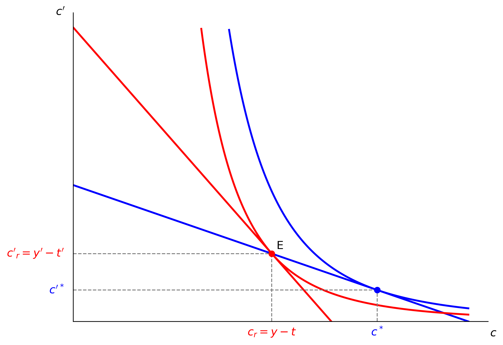
Obr. 18.9 Vplyv úplnej regulácie toku kapitálu na alokáciu spotrebiteľa#
18.7. Model výrobnej otvorenej ekonomiky#
Model otvorenej výrobnej ekonomiky rozširuje model otvorenej prídelovej ekonomiky o výrobu, kapitál a trh práce. Základné závery o bilanciách so zahraničím však zostávajú zachované.
V kapitole Dynamický model zatvorenej výrobnej ekonomiky sme predstavili model zatvorenej výrobnej ekonomiky, v ktorej sa využíva racionálne správanie reprezentatívneho spotrebiteľa a reprezentatívnej firmy. Spotrebiteľ paušálnym zdanením financuje spotrebu vlády. Model predpokladá dve rozhodovacie obdobia.
V tejto časti model upravíme, aby zodpovedal malej otvorenej ekonomike. Rovnako ako v modeli otvorenej prídelovej ekonomiky, predpokladáme, že domáca otvorená ekonomika je vo svete tak slabá, že nedokáže ovplyvniť svetovú úrokovú mieru \(r^*\). Úroková miera bude v modeli otvorenej ekonomiky exogénnou premennou a platí (18.2),
Okrem toho, dopyt po výstupe (17.26) rozšírime o zahraničný dopyt. Platí
kde \(X\) predstavuje čistý vývoz, teda rozdiel medzi vývozom a dovozom..
Keďže domáca ekonomika nedokáže ovplyvniť svetovú úrokovú mieru, úroková miera zostáva na úrovni \(r^*\). Rovnováha na trhu výstupu sa preto obnovuje prostredníctvom zmien čistého vývozu \(X\).
Predpokladáme, že pohyb práce medzi domácou ekonomikou a zahraničím je obmedzený. Mzdová sadzba sa preto prispôsobuje zmenám ponuky práce reprezentatívneho spotrebiteľa a dopytu po práci reprezentatívnej firmy.
Charakteristika |
Hodnota |
|---|---|
Počet období |
2 |
Ekonomické subjekty |
Spotrebiteľ, firma, vláda, zahraničie |
Typ ekonomiky |
Otvorená |
Typ modelu |
Dynamický model všeobecnej rovnováhy |
Výrobné faktory |
Práca, kapitál |
18.8. Konkurenčná rovnováha#
- Konkurenčná rovnováha
Pri danej spotrebe vlády \(\{G,G'\}\), technológii firmy \(\{A,A'\}\) a svetovej úrokovej miery \(r^*\) je konkurenčnou rovnováhou taká alokácia spotrebiteľa \(\{\ell,\ell',C,C'\}\), alokácia firmy \(\{N,N',Y,Y',K'\}\), čistý vývoz \(\{X\}\) a množina cien \(\{w,w'\}\), že
spotrebiteľ rieši úlohu maximalizovať funkciu užitočnosti (17.1) vzhľadom na životný rozpočet (17.4),
vláda spĺňa životný rozpočet (17.24) a
trh práce je v rovnováhe
trh produktov je v rovnováhe
Konkurenčnú rovnováhu možno charakterizovať sústavou podmienok prvého rádu spotrebiteľa (17.5) až (17.8), podmienok prvého rádu firmy (17.17) až (17.19), životného rozpočtu vlády (17.24), produkčnou funkciou a výpočtom budúceho kapitálu (17.11) až (17.13).
Na Obr. 18.10 je priesečníkom modrej ponuky a zeleného dopytu výstupu zobrazená konkurenčná rovnováha zatvorenej ekonomiky. Rovnováhu charakterizuje dvojica výstupu a úrokovej miery \([Y_1,r]\).
Predpokladajme, že domáca úroková miera je nižšia ako svetová, \(r<r^*\). Ak sa ekonomika otvorí svetu, zvýši sa v nej úroková miera na \(r=r^*\). Dynamickým substitučným efektom sa zvýši ponuka práce a ponuka výstupu.
Aby sa obnovila rovnováha, zvýši sa dopyt po výstupe. Ten sa zvýši, ak \(X>0\). Bilancie so zahraničím sa zlepšia. Krivka dopytu sa posunie doprava zo zelenej do tmavočervenej čiary.
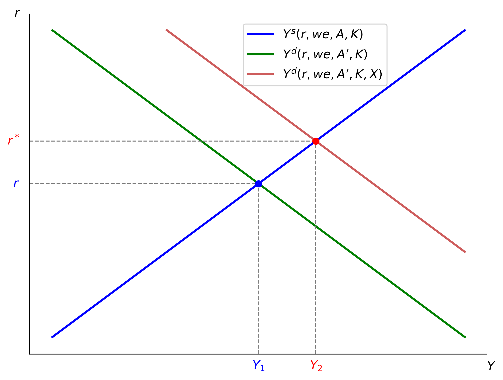
Obr. 18.10 Malá otvorená výrobná ekonomika#
V komparatívnej statike preveríme reakciu otvorenej ekonomiky na nasledovné šoky:
Vplyv zvýšenia svetovej úrokovej miery (finančný šok).
Vplyv zvýšenia súčasných vládnych nákupov (dopytový šok)
Vplyv dočasného zvýšenia súčasnej celkovej produktivity faktorov (súčasný technologický šok).
Vplyv očakávaného zvýšenia budúcej celkovej produktivity faktorov (budúci technologický šok).
Vplyv zvýšenia úrokovej prirážky spôsobenej nedokonalosťami na trhu dlhopisov (finančný šok).
Vplyv poklesu práce a ponuky výstupu z dôvodu sektorového šoku alebo pandémie.
Poznámka
Na rozdiel od zatvorenej výrobnej ekonomiky sa nebudeme podrobne zaoberať reakciami trhu práce. Pozornosť zameriame na bilancie so zahraničím v zmysle vyššie uvedenej definície.
18.9. Vplyv zvýšenia svetovej úrokovej miery#
Ak sa zvýši svetová úroková miera z \(r_1\) na \(r_2\), dynamickým substitučným efektom sa zvýši ponuka práce a ponuka výstupu.
Aby sa obnovila rovnováha, zvýši sa dopyt po výstupe. Ten sa zvýši, ak \(X>0\). Bilancie so zahraničím sa zlepšia. Krivka dopytu po výstupe sa na Obr. 18.11 posunie doprava zo zelenej do tmavočervenej čiary.
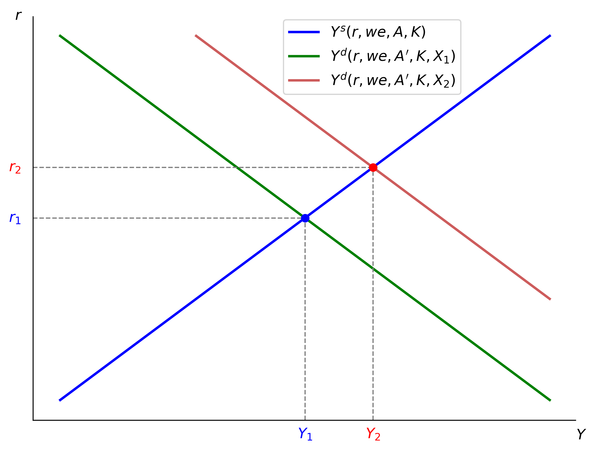
Obr. 18.11 Vplyv zvýšenia svetovej úrokovej miery#
Prepojenie s modelom otvorenej prídelovej ekonomiky
V modeli otvorenej prídelovej ekonomiky zvýšenie svetovej úrokovej miery zlepšuje bilancie so zahraničím, ak dynamický substitučný efekt prevláda nad príjmovým efektom. Spotrebitelia odkladajú spotrebu do budúcnosti a zvyšujú úspory.
Vo výrobnej ekonomike je tento predpoklad obsiahnutý implicitne v správaní domácností. Vyššia úroková miera vedie k poklesu spotreby, rastu práce a rastu úspor. Bilancie so zahraničím sa zlepšujú rovnako ako v modeli otvorenej prídelovej ekonomiky.
18.10. Vplyv zvýšenia vládnych nákupov#
Ak sa zvýšia vládne nákupy v zatvorenej ekonomike, na Obr. 17.14 sa dopyt po výstupe pri nezmenenej úrokovej miere posunie doprava o \((1-mpc)\Delta G\) jednotiek zo zelenej do tmavočervenej krivky. Ponuka výstupu sa príjmovým efektom zníženia životného bohatstva spotrebiteľa posunie doprava z modrej do červenej krivky. Predpokladali sme, že posun ponuky je menší ako posun dopytu.
Tieto posuny sú zobrazené aj na Obr. 18.12. Posun dopytu pri nezmenenej úrokovej miere a nezmenenom čistom vývoze je zo zelenej do žltej krivky. Posun ponuky vplyvom zníženia životného bohatstva je z modrej do červenej krivky.
Keďže úroková miera sa nemôže zmeniť a zostáva na úrovni \(r^*\), časť zvýšeného dopytu sa premietne do zhoršenia bilancií so zahraničím. Čistý vývoz sa preto zníži a dopyt po výstupe sa posunie zo žltej do tmavočervenej krivky smerom doľava tak, aby rovnovážna úroková miera zostala nezmenená.
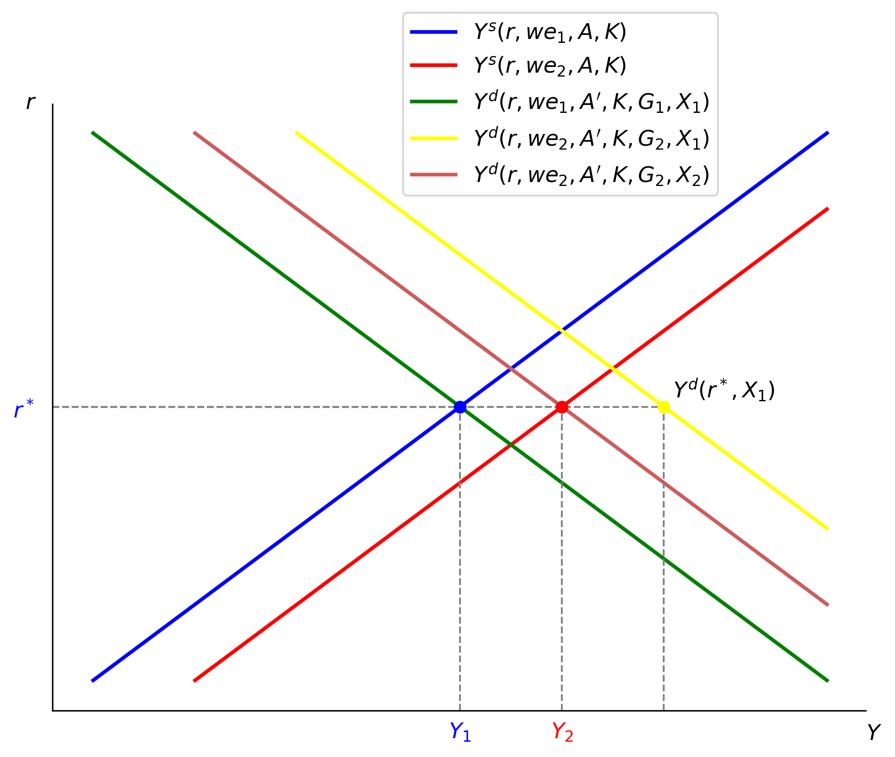
Obr. 18.12 Vplyv zvýšenia vládnych nákupov#
V porovnaní so zatvorenou ekonomikou sú účinky fiškálnej expanzie v malej otvorenej ekonomike slabšie. Zvýšenie vládnych nákupov síce znižuje životné bohatstvo spotrebiteľov a vedie k poklesu spotreby, tento pokles však vzniká iba príjmovým efektom. Na rozdiel od zatvorenej ekonomiky sa úroková miera nezvyšuje, preto nevzniká dodatočný dynamický substitučný efekt, ktorým by sa viac znížila spotreba
Investície sa zároveň nemenia, pretože závisia od svetovej úrokovej miery \(r^*\), ktorá zostáva konštantná.
Zvýšené vládne nákupy sú preto financované predovšetkým zhoršením bilancií so zahraničím. Čistý vývoz klesá viac ako spotreba a preberá podstatnú časť prispôsobenia ekonomiky na fiškálny šok.
Keďže časť dodatočného dopytu je uspokojená prostredníctvom zahraničia, rast výstupu vyvolaný fiškálnou expanziou je menší ako v zatvorenej ekonomike. Fiškálny multiplikátor výstupu je preto v malej otvorenej ekonomike nižší.
Otvorená ekonomika môže časť dôsledkov fiškálnej expanzie „exportovať“ do zahraničia prostredníctvom zhoršenia obchodnej bilancie, preto sú účinky vládnych nákupov na domácu produkciu slabšie než v ekonomike zatvorenej.
18.11. Vplyv zvýšenia súčasnej celkovej produktivity faktorov#
Ak sa zvýši celková produktivita faktorov v prvom období v zatvorenej ekonomike, ponuka výstupu posunie doprava vplyvom zvýšenia hraničného produktu práce a dopytu po práci. Na Obr. 18.13 je posun zobrazený z modrej do červenej krivky.
Keďže úroková miera sa nemôže zmeniť a zostáva na úrovni \(r^*\), nedostatok dopytu výstupu sa premietne do zlepšenia bilancií so zahraničím. Čistý vývoz sa preto zvýši a dopyt po výstupe sa posunie zo zelenej do tmavočervenej krivky smerom doprava tak, aby rovnovážna úroková miera zostala nezmenená.
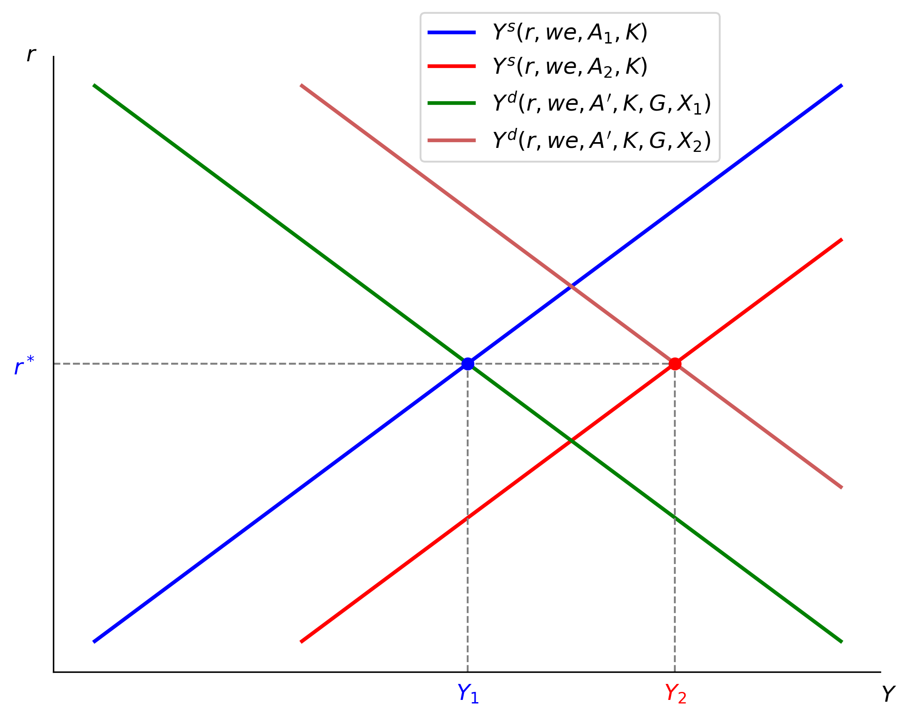
Obr. 18.13 Vplyv zvýšenia súčasnej celkovej produktivity faktorov#
Keďže sa úroková miera nezmení, investície sa tiež nezmenia (na rozdiel od zatvorenej ekonomiky), ale zlepšia sa bilancie so zahraničím.
Za predpokladu, že zvýšenie celkovej produktivity faktorov sa difúziou technológie prenesie aj do zvyšku sveta, zvýši sa svetová ponuka výstupu. Výsledkom bude pokles svetovej úrokovej miery, ktorý podporí rast domácich investícií a spotreby.
Upozornenie
Zmeny celkovej produktivity faktorov ovplyvňujú nielen produkčné rozhodnutia firmy, ale aj životné bohatstvo spotrebiteľa. Vyššia produktivita zvyšuje súčasné alebo budúce príjmy domácností, a tým aj ich životné bohatstvo.
Rast životného bohatstva vyvoláva príjmový efekt, ktorý zvyšuje dopyt po spotrebe a voľnom čase. Podľa okolností sa preto môžu posunúť nielen dopyt po výstupe, ale aj ponuka práce a ponuka výstupu.
Prepojenie s modelom otvorenej prídelovej ekonomiky
Zvýšenie súčasnej celkovej produktivity faktorov vo výrobnej ekonomike je analógiou dočasného zvýšenia súčasného príjmu v modeli otvorenej prídelovej ekonomiky.
V oboch prípadoch ide o priaznivý šok v prvom období. V modeli otvorenej prídelovej ekonomiky vedie dočasné zvýšenie disponibilného príjmu k rastu úspor a k zlepšeniu bilancií so zahraničím. Vo výrobnej ekonomike zvýšenie celkovej produktivity faktorov zvyšuje súčasný výstup a vedie k rovnakému výsledku. Bilancie so zahraničím sa zlepšujú aj v tomto modeli.
18.12. Vplyv očakávaného zvýšenia budúcej celkovej produktivity faktorov#
Uvideli sme (Vplyv očakávaného zvýšenia budúcej celkovej produktivity faktorov), že ak spotrebitelia a firma očakávajú zvýšenie celkovej produktivity faktorov, zvýši sa budúci hraničný produkt kapitálu a očakáva sa zvýšenie budúceho príjmu \(y'\) a teda aj životného bohatstva.
Zvýšením budúceho hraničného produktu kapitálu sa zvýši investičný dopyt a teda aj dopyt po výstupe.
Zvýšením životného bohatstva sa príjmovým efektom zvýši dopyt po voľnom čase a spotrebe. Zvýši sa spotrebný dopyt a zníži sa ponuka práce a ponuka výstupu.
Na Obr. 18.14 je posun dopytu po výstupe zobrazený posunom zelenej krivky do žltej. Posun ponuky je zobrazený posunom modrej krivky do červenej. Tieto pohyby zodpovedajú aj posunom v zatvorenej ekonomike na Obr. 17.17.
Keďže úroková miera sa nemôže zmeniť a zostáva na úrovni \(r^*\), nadbytok dopytu po výstupe sa premietne do zhoršenia bilancií so zahraničím. Čistý vývoz sa preto zníži a krivka dopytu po výstupe sa posunie zo žltej do tmavočervenej krivky smerom doľava tak, aby rovnovážna úroková miera zostala nezmenená.
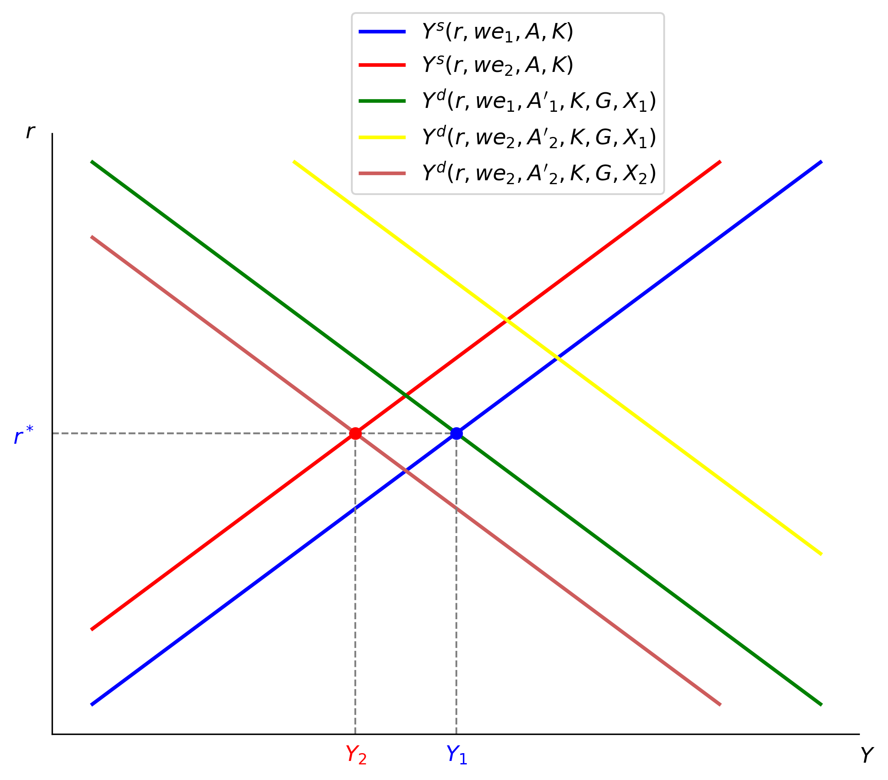
Obr. 18.14 Vplyv očakávaného zvýšenia budúcej celkovej produktivity faktorov#
Prepojenie s modelom otvorenej prídelovej ekonomiky
Očakávané zvýšenie budúcej celkovej produktivity faktorov zodpovedá v modeli otvorenej prídelovej ekonomiky očakávanému zvýšeniu budúceho disponibilného príjmu.
V modeli otvorenej prídelovej ekonomiky vedie očakávanie vyšších budúcich príjmov k rastu súčasnej spotreby a k zníženiu úspor. Bilancie so zahraničím sa preto zhoršujú.
Výsledok výrobnej ekonomiky je podobný, ale účinok je silnejší. Očakávané zvýšenie budúcej produktivity zvyšuje životné bohatstvo spotrebiteľov, ktorí zvýšia spotrebu a dopyt po voľnom čase. Zníži sa preto ponuka práce a ponuka výstupu. Súčasne rastie investičný dopyt v dôsledku vyššieho očakávaného hraničného produktu kapitálu.
Na rozdiel od prídelovej ekonomiky sa preto nezvyšuje iba dopyt po výstupe, ale znižuje sa aj jeho ponuka. Bilancie so zahraničím sa preto zhoršujú výraznejšie.
Výrobná ekonomika potvrdzuje základný výsledok modelu otvorenej prídelovej ekonomiky. Súčasné pozitívne šoky vedú spravidla k zlepšeniu bilancií so zahraničím, zatiaľ čo očakávané budúce pozitívne šoky vedú k ich zhoršeniu.
Vo výrobnej ekonomike je tento rozdiel ešte výraznejší. Budúce technologické šoky totiž okrem rastu životného bohatstva zvyšujú aj investičný dopyt a znižujú súčasnú ponuku výstupu. Čím väčší podiel očakávaných budúcich technologických šokov v ekonomike, tým kontracyklickejšie bývajú bilancie so zahraničím.
18.13. Vplyv zvýšenia úrokovej prirážky spôsobenej nedokonalosťami na trhu dlhopisov (finančný šok)#
Uviedli sme (Vplyv zvýšenia úrokovej prirážky spôsobenej nedokonalosťami na trhu dlhopisov (finančný šok)), že ak sa zvýši úroková prirážka spôsobená asymetrickými informáciami na finančných trhoch, zníži sa investičný dopyt a životné bohatstvo spotrebiteľa. Investičný dopyt sa zníži pre vyššie náklady financovania nového kapitálu. Životné bohatstvo sa zníži pre vyššie náklady obstarania úverov. Vplyvom zníženia životného bohatstva spotrebiteľ príjmovým efektom zníži spotrebu a voľný čas a teda zvýši prácu a zvýši sa ponuka výstupu.
Na Obr. 18.15 prezentujú tieto efekty posuny ponuky a dopytu výstupu. Dopyt po výstupe sa vplyvom zníženia životného bohatstva a nižšieho investičného dopytu posunie doľava zo zelenej do žltej krivky. Ponuka výstupu sa vplyvom zníženia životného bohatstva posunie doprava z modrej do červenej krivky.
Keďže svetová úroková miera sa nemení, nedostatok dopytu absorbuje zahraničie a bilancie so zahraničím sa zlepšia. Čistý vývoz vzrastie a dopyt po výstupe sa posunie doprava zo žltej do tmavočervenej krivky tak, aby sa obnovila rovnováha pri nezmenenej svetovej úrokovej miere.
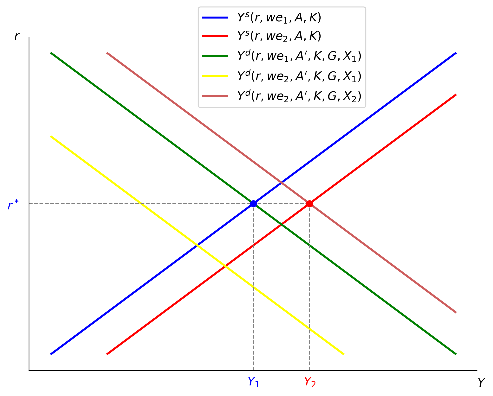
Obr. 18.15 Vplyv zvýšenia úrokovej prirážky#
Na rozdiel od optimistických správ o budúcom ekonomickom vývoji vedie rast úrokovej prirážky k obmedzeniu spotreby a investícií. Bilancie so zahraničím sa preto zlepšujú.
Model výrobnej otvorenej ekonomiky potvrdzuje výsledok získaný v modeli otvorenej prídelovej ekonomiky. Zvýšenie úrokovej prirážky vedie k zlepšeniu bilancií so zahraničím.
Vo výrobnej ekonomike navyše vidíme ďalší mechanizmus, prostredníctvom ktorého úroková prirážka pôsobí. Vyššie náklady financovania znižujú investičný dopyt a zároveň znižujú životné bohatstvo spotrebiteľov. Spotrebitelia preto obmedzia spotrebu a zvýšia ponuku práce, čo vedie k rastu ponuky výstupu.
Výsledkom je pokles domáceho dopytu po výstupe pri súčasnom raste jeho ponuky. Prebytok produkcie absorbuje zahraničie a bilancie so zahraničím sa zlepšia.
Model tak potvrdzuje princíp formulovaný v modeli otvorenej prídelovej ekonomiky. Ekonomiky s vysokou rizikovou prirážkou majú tendenciu dosahovať zlepšenie bilancií so zahraničím práve v obdobiach zhoršenia ekonomických podmienok. Bilancie so zahraničím preto bývajú kontracyklické.
Európska dlhová kríza
Po globálnej finančnej kríze sa investori začali viac obávať schopnosti niektorých krajín eurozóny splácať svoje záväzky. Týkalo sa to najmä Grécka, ale aj ďalších krajín južnej Európy. V dôsledku toho sa zvýšili úrokové prirážky, za ktoré si tieto krajiny mohli požičiavať na finančných trhoch.
Vyššia úroková prirážka zvyšuje náklady financovania dlhu a znižuje životné bohatstvo ekonomických subjektov. Spotrebitelia obmedzujú spotrebu a firmy investície, čo vedie k poklesu ekonomickej aktivity a životnej úrovne.
18.14. Vplyv poklesu ponuky výstupu#
Vplyvom negatívneho sektorového šoku (Vplyv sektorových šokov (simultánny pokles ponuky a dopytu po práci)) sa zníži dopyt a ponuka práce. Vplyvom pandémie (Vplyv pandémie na konkurenčnú rovnováhu) sa zníži ponuka práce. V oboch prípadoch sa zníži množstvo práce a ponuka výstupu. Na Obr. 18.16 sa preto krivka ponuky výstupu posunie doľava z modrej do červenej krivky.
Pri nezmenenej svetovej úrokovej miere sa nedostatok výstupu prejaví zhoršením bilancií so zahraničím. Čistý vývoz sa zníži a krivka dopytu po výstupe sa posunie doľava zo zelenej do tmavočervenej krivky tak, aby sa obnovila rovnováha na trhu výstupu.
Bilancie so zahraničím sa preto zhoršia.
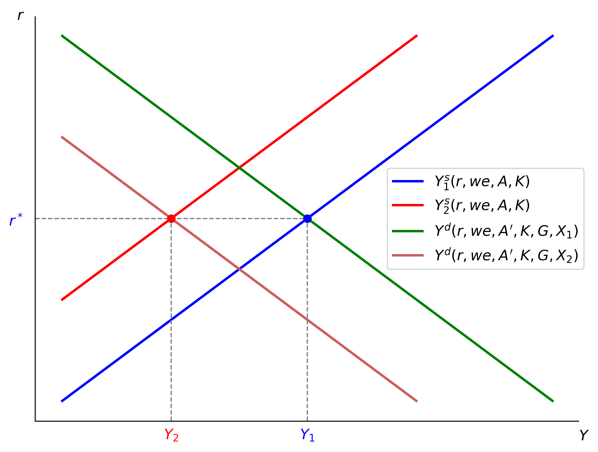
Obr. 18.16 Vplyv zníženia ponuky výstupu#
Pandémia COVID‑19 a Slovensko
Pandémia predstavovala kombináciu negatívnych šokov na strane ponuky aj dopytu. Zníženie dostupnosti práce a narušenie výrobných reťazcov obmedzili domácu produkciu. Model predpovedá zhoršenie bilancií so zahraničím.
Čistý vývoz reagoval v súlade s predikciou modelu a počas pandémie sa výrazne prepadol (Obr. 18.6). Reakcia bežného účtu platobnej bilancie na (Obr. 18.7) však bola odlišná, čo naznačuje význam ostatných zložiek bežného účtu.
Na základe vývoja zložiek bežného účtu (Obr. 18.3) a zložiek čistých príjmov faktorov zo zahraničia (Obr. 18.4) usudzujeme, že zlepšenie bežného účtu počas pandémie možno pripísať najmä zlepšeniu čistých investičných príjmov \(NII\).
18.15. Zhrnutie: teoretické vysvetlenie cyklických charakteristík bilancií so zahraničím#
Modely otvorenej prídelovej aj otvorenej výrobnej ekonomiky umožňujú identifikovať dva základné determinanty cyklických charakteristík bilancií so zahraničím.
Prvým determinantom je trvácnosť príjmových a technologických šokov. Súčasné pozitívne šoky zvyšujú úspory a zlepšujú bilancie so zahraničím. Naopak, očakávané budúce zvýšenie príjmov alebo produktivity vedie k rastu spotreby a investícií a k zhoršeniu bilancií so zahraničím.
Čím väčší význam majú očakávané budúce zmeny produktivity a príjmov, tým kontracyklickejšie bývajú bilancie so zahraničím.
Druhým determinantom cyklických charakteristík bilancií so zahraničím je význam finančných šokov a finančných nedokonalostí. Zvýšenie svetovej úrokovej miery alebo rast úrokovej prirážky vedie k rastu úspor a k zlepšeniu bilancií so zahraničím. Finančné šoky a finančné nedokonalosti preto vytvárajú tendenciu ku kontracyklickým bilanciám so zahraničím.
Bilancie so zahraničím bývajú najvýraznejšie procyklické v ekonomikách, v ktorých prevládajú dočasné príjmové a technologické šoky. Naopak, kontracyklické bývajú v ekonomikách, v ktorých významnú úlohu zohrávajú očakávania budúcich príjmov, očakávané budúce technologické zmeny alebo finančné šoky.
18.16. Riešený príklad: Dynamický model všeobecnej rovnováhy malej otvorenej ekonomiky v jazyku Pyhton#
Použité balíčky sú:
from scipy.optimize import fsolve
import numpy as np
V tomto príklade upravíme model v príklade Príklad: Dynamický model všeobecnej rovnováhy v jazyku Python, aby zodpovedal podmienkam malej otvorenej ekonomiky.
Model zatvorenej ekonomiky pozostáva zo sústavy podmienok prvého rádu spotrebiteľa (17.35)–(17.37) podmienok prvého rádu firmy (17.38)–(17.40) investičnej funkcii (17.41) a (17.42), produkčnej funkcii (17.33) a (17.34) rovnováhe na trhu výstupu (17.29) a (17.30) a časového ohraničeniu (17.31) a (17.32).
V úprave pre malú otvorenú ekonomiku je úroková miera \(r\) exogénnou premennou a rovná sa svetovej úrokovej miere. Novou endogénnou premennou je čistý vývoz \(X\). Rovnicu rovnováhy na trhu výstupu (18.9) v prvom období nahradíme rovnicou
Keďže model kalibrujeme tak, aby sa ustálený výstup rovnal \(1\), čistý vývoz \(X\) interpretujeme ako podiel na HDP. Napríklad hodnota \(X=0.05\) znamená prebytok obchodnej bilancie vo výške 5 % HDP.
- Konkurenčná rovnováha
Pri danej spotrebe vlády \(\{G,G'\}\), technológii firmy \(\{A,A'\}\) a svetovej úrokovej miere \(r^*\), je konkurenčnou rovnováhou taká alokácia spotrebiteľa \(\{\ell,\ell',C,C'\}\), alokácia firmy \(\{N,N',K'\}\), zodpvedajúca množina endogénnych premenných \(\{Y,Y',I,I',X\}\), a množina cien \(\{w,w'\}\), ktoré zodpovedajú sústave rovníc pozostávajúcich z podmienok prvého rádu spotrebiteľa (17.35)–(17.37) podmienok prvého rádu firmy (17.38)–(17.40) investičnej funkcii (17.41) a (17.42), produkčnej funkcii (17.33) a (17.34) rovnováhe na trhu výstupu v prvom období (18.9) a v druhom období (17.30) a časového ohraničeniu (17.31) a (17.32).
Sústavu rovníc a endogénne premenné možno v jazyku Python špecifikovať nasledovnou funkciou.
def ppr(endog):
C, Cp, l, lp, N, Np, Y, Yp, I, Ip, Kp, w, wp, X = endog
# ÚPRAVA oproti modelu zatvorenej ekonomiky, r je exogénna, X endogénna
return (
C/l - w,
Cp/lp - wp,
Cp/(beta*C) - (1+r),
(1-alpha)*A*K**alpha*N**(-alpha) - w,
(1-alpha)*Ap*Kp**alpha*Np**(-alpha) - wp,
alpha*Ap*Kp**(alpha-1)*Np**(1-alpha) - delta - r,
Y - A*K**alpha*N**(1-alpha),
Yp - Ap*Kp**alpha*Np**(1-alpha),
I - (Kp - (1-delta)*K),
Ip - delta*Kp,
C + I + G + X - Y,
# ÚPRAVA čistý vývoz X v rovnici podmienky rovnováhy na trhu výstupu v prvom období
Cp + Ip + Gp - Yp,
N + l - h,
Np + lp - h
)
V porovnaní so zatvorenou ekonomikou sa počet endogénnych premenných nemení. Endogénna úroková miera je nahradená endogénnym čistým vývozom.
Ak predpokladáme, že v ustálenom stave platí \(X=0\), môžeme využiť kalibráciu z príkladu Príklad: Dynamický model všeobecnej rovnováhy v jazyku Python. Stačí zvoliť takú hodnotu exogénnej svetovej úrokovej miery, aby zodpovedala úrokovej miere v ustálenom stave zatvorenej ekonomiky. Podľa (17.52) preto nastavíme
Pri tejto hodnote úrokovej miery sa čistý vývoz v ustálenom stave rovná \(0\).
A = 1.
Ap = 1.
alpha = 1/3
delta = 0.1
G = 1/4
Gp = 1/4
K = 1.
r=alpha-delta # ÚPRAVA: úroková miera kalibrovaná, aby X=0
beta = 1 / (1 + alpha - delta)
h = (1-G-delta)/(1-alpha) + 1
Dosadením kalibrovaných hodnôt parametrov do sústavy rovníc a jej numerickým vyriešením získame konkurenčnú rovnováhu v ustálenom stave.
C, Cp, l, lp, N, Np, Y, Yp, I, Ip, Kp, w, wp, X = fsolve(
ppr,
(1-delta-G, 1-delta-G, h-1, h-1, 1., 1.,1., 1.,delta, delta,1.,1-alpha,1-alpha,0)
)
#zobraz výsledky
print("Všeobecná rovnováha")
print("Spotreba v prvom období", round(C,2), "v druhom", round(Cp,2))
print("Práca v prvom období", round(N,2), "v druhom", round(Np,2))
print("HDP v prvom období", round(Y,2), "v druhom", round(Yp,2))
print("Investície v prvom období",round(I,2), "v druhom", round(Ip,2))
print("Mzdová sadzba v prvom období", round(w,2), "v druhom", round(wp,2))
print("Čistý vývoz", round(X,2))
Všeobecná rovnováha
Spotreba v prvom období 0.65 v druhom 0.65
Práca v prvom období 1.0 v druhom 1.0
HDP v prvom období 1.0 v druhom 1.0
Investície v prvom období 0.1 v druhom 0.1
Mzdová sadzba v prvom období 0.67 v druhom 0.67
Čistý vývoz 0.0
V ustálenom stave sú všetky premenné v oboch obdobiach rovnaké. Keďže svetová úroková miera bola kalibrovaná na úrovni úrokovej miery ustáleného stavu zatvorenej ekonomiky, čistý vývoz je nulový. Domáca ekonomika preto v ustálenom stave nie je ani čistým veriteľom, ani čistým dlžníkom voči zahraničiu.
Táto kalibrácia nám umožňuje interpretovať následné zmeny čistého vývozu ako dôsledok jednotlivých šokov, a nie ako dôsledok počiatočnej nerovnováhy vo vzťahu k zahraničiu.
Preveríme dosahy rôznych šokov uvažovaných v teoretickej časti tejto kapitoly na hospodárstvo. Preskúmame, ako sa zmení hospodárstvo, ak sa
zvýši sa svetová úroková miera (finančný šok)
zvýšia súčasné vládne nákupy (fiškálny šok),
zvýši súčasná celková produktivita faktorov (technologický šok),
zvýši budúca celková produktivita faktorov (optimistické správy),
Najskôr si vytvorme pomocné funkcie:
funkcia výpočtu relatívnych zmien
percent_zmena()afunkcia, ktorá za nás napíše odpoveď, ako sa zmenia endogénne premenné po realizácii šoku
napis_odpoved().
Keďže ustálený stav je charakterizovaný nulovým čistým vývozom, zmeny premennej X interpretujeme priamo ako zlepšenie alebo zhoršenie bilancií so zahraničím.
def percent_zmena(pred, po):
return 100 * (po - pred) / pred
def napis_odpoved(text,ge_new):
ge_change = percent_zmena(ge,ge_new)
print(text)
print("Spotreba", round(ge_change[0],4))
print("Práca", round(ge_change[4],4))
print("Výstup", round(ge_change[6],4))
print("Mzdová sadzba", round(ge_change[11],4))
print("Bilancie so zahraničím (% HDP)", round((ge_new[13] - ge[13])*100,2))
print("Investície", round(ge_change[8],4))
ge = fsolve(
ppr,
(1-delta-G, 1-delta-G, h-1, h-1, 1., 1.,1., 1.,delta, delta,1.,1-alpha,1-alpha,0)
)
Funkcia napis_odpoved vypočíta percentuálne zmeny po realizácii šoku všetkých premenných okrem zmeny bilancií so zahraničím. Tie uvádzame v percentuálnom podiele voči výstupu.
18.16.1. Vplyv zvýšenia svetovej úrokovej miery#
Podľa vyššie uvedenej teórie, ak sa zvýši svetová úroková miera, bilancie so zahraničím sa zlepšia.
Zvýšme úrokovú mieuru o percentuálny bod, prepočítajme a porovnajme konkurenčnú rovnováhu s pôvodnou.
r = alpha - delta + 0.01
ge_r = fsolve(ppr, ge)
napis_odpoved(
"Zmeny premenných po zvýšení svetovej úrokovej miery o 1 percentuálny bod",
ge_r
)
r = alpha - delta
Zmeny premenných po zvýšení svetovej úrokovej miery o 1 percentuálny bod
Spotreba -2.3113
Práca 1.7128
Výstup 1.1386
Mzdová sadzba -0.5645
Bilancie so zahraničím (% HDP) 6.93
Investície -42.8762
18.16.2. Vplyv zvýšenia súčasných vládnych nákupov#
Podľa teórie, ak sa súčasné vládne nákupy zvýšia, bilancie so zahraničím sa zhoršia. Vládna spotreba vytláča súkromnú a zahraničnú spotrebu.
Zvýšme vládne nákupy o \(0,1\) jednotiek, prepočítajme a porovnajme konkurenčnú rovnováhu s pôvodnou.
G=1/4+0.1
ge_g = fsolve(ppr, ge)
napis_odpoved(
"Zmeny premenných po zvýšení súčasných vládnych nákupov o 0,1 jednotiek",
ge_g
)
G=1/4
Zmeny premenných po zvýšení súčasných vládnych nákupov o 0,1 jednotiek
Spotreba 0.0
Práca 0.0
Výstup 0.0
Mzdová sadzba 0.0
Bilancie so zahraničím (% HDP) -10.0
Investície -0.0
Numerický príklad nezachytáva pokles životného bohatstva vyvolaný budúcim zvýšením daní. Chýba preto príjmový efekt, ktorý v teoretickej analýze posúva na Obr. 18.12 ponuku výstupu doprava.
Zahraničie absorbuje celý dodatočný dopyt spôsobený zvýšením vládnych nákupov,
a rovnováha na trhu produktov sa nemení.
V dôsledku toho sa numerický fiškálny multiplikátor výstupu rovná \(0\).
Na rozdiel od teoretického modelu, v ktorom zvýšenie vládnych nákupov znižuje životné bohatstvo spotrebiteľov, v numerickom modeli vládna spotreba vytláča iba zahraničný dopyt po domácej produkcii. Nezmení sa spotreba \(C\) ani investície.
18.16.3. Vplyv zvýšenia súčasnej celkovej produktivity faktorov#
Podľa teórie, ak sa zvýši súčasná celková produktivita faktorov, bilancie so zahraničím sa zlepšia.
Zvýšme celkovú produktivitu faktorov v prvom období o \(1\) %.
A=1.01
ge_a = fsolve(ppr, ge)
napis_odpoved(
"Zmeny premenných po zvýšení súčasnej celkovej produktivity faktorov o 1 percento",
ge_a
)
A=1.
Zmeny premenných po zvýšení súčasnej celkovej produktivity faktorov o 1 percento
Spotreba 0.0
Práca 0.7308
Výstup 1.4915
Mzdová sadzba 0.7552
Bilancie so zahraničím (% HDP) 1.49
Investície -0.0
Po zvýšení súčasnej celkovej produktivity faktorov o \(1\) %, sa podiel bilancií so zahraničím na pôvodnom HDP zlepší o \(1,49\) percentuálneho bodu.
18.16.4. Vplyv očakávaného zvýšenia budúcej celkovej produktivity faktorov#
Podľa teórie, ak sa očakáva zvýšenie budúcej celkovej produktivity faktorov, bilancie so zahraničím sa zhoršia.
Zvýšme celkovú produktivitu faktorov v druhom období o \(1\) %.
Ap=1.01
ge_ap = fsolve(ppr, ge)
napis_odpoved(
"Zmeny premenných po očakávanom zvýšení budúcej"
"celkovej produktivity faktorov o 1 percento",
ge_ap
)
Ap=1.
Zmeny premenných po očakávanom zvýšení budúcejcelkovej produktivity faktorov o 1 percento
Spotreba 1.7499
Práca -1.2808
Výstup -0.8557
Mzdová sadzba 0.4306
Bilancie so zahraničím (% HDP) -3.26
Investície 12.6378
Po očakávanom zvýšení budúcej celkovej produktivity faktorov o \(1\) % sa podiel bilancií so zahraničím na pôvodnom HDP zhorší o \(3,26\) percentuálneho bodu.
Spotrebitelia očakávajú vyššie budúce príjmy a zvýšia súčasnú spotrebu. Firmy zároveň očakávajú vyšší budúci hraničný produkt kapitálu a zvýšia investície. Rast spotreby aj investícií vedie k zhoršeniu bilancií so zahraničím.
18.17. Neriešené príklady#
18.17.1. Príklad: Model prídelovej otvorenej ekonomiky#
Odvoďte alokáciu spotrebiteľa v prídelovej ekonomike, ktorého preferencie charakterizuje funkcia užitočnosti (8.19).
Ak je v ekonomike \(N\) identických spotrebiteľov, analyticky vyjadrite bilancie so zahraničím \(X\).
Dokážte, že ak sa zvýši prídel ekonomiky v súčasnom období \(Y=Ny\) o jednotku, bilancie so zahraničím sa zvýšia o menej ako o jednotku.
Dokážte, že ak sa v budúcom období očakáva vyšší prídel ekonomiky \(Y'=Ny'\) o jednotku, bilancie so zahraničím sa za predpokladu \(\beta,r>0\) znížia o menej ako o jednotku.
Dokážte, že ak sa trvalo zvýši príjem v oboch obdobiach o jednotku, bilancie so zahraničím sa za predpokladu \(\beta(1+r)=1\) nezmenia.
Za akých podmienok preváži pri zvýšení úrokovej miery dynamický substitučný efekt nad príjmovým efektom a bilancie so zahraničím sa zlepšia?
18.17.2. Príklad: Výmenné relácie#
Spotrebitelia na ostrove, ktorí sú identickí, majú prídely banánov. Všetku úrodu banánov vyvezú do zahraničia a dovezú ryby. Výmenné relácie vyjadrené v rybách za banán sú \(V\). Preferencie každého spotrebiteľa charakterizuje funkcia užitočnosti (8.19), pričom spotreba je vyjadrená v jednotkách rýb.
Odvoďte alokáciu spotrebiteľa v prídelovej ekonomike, ktorého preferencie charakterizuje funkcia užitočnosti (8.19).
Ak je v ekonomike \(N\) identických spotrebiteľov, analyticky vyjadrite bilancie so zahraničím \(X\).
Dokážte, že ak sa v súčasnom období zlepšia výmenné relácie o jednotku, bilancie so zahraničím sa zvýšia o menej ako o jednotku.
Dokážte, že ak sa v budúcom období očakáva zlepšenie výmenných relácií o jednotku, bilancie so zahraničím sa za predpokladu \(\beta,r>0\) znížia o menej ako o jednotku.
Dokážte, že ak sa výmenné relácie trvalo zlepšia v oboch obdobiach o jednotku, bilancie so zahraničím sa za predpokladu \(\beta(1+r)=1\) nezmenia.
Vyjadrite bilancie so zahraničím v banánoch.
18.17.3. Príklad: Úplná regulácia pohybu kapitálu#
V otvorenej prídelovej ekonomike sú všetci spotrebitelia dlžníci. Z dôvodu deficitu bilancií so zahraničím sa vláda rozhodne zaviesť úplnú reguláciu pohybu kapitálu a spotrebiteľom zakáže prístup na svetové finančné trhy.
Vyjadrite optimálnu alokáciu spotrebiteľa po zavedení regulácie.
Vyjadrite rovnovážnu domácu úrokovú mieru.
Je zavedenie úplnej regulácie pohybu kapitálu Paretovo efektívne?
18.17.4. Príklad: Vplyv úrokovej prirážky v investičnej funkcii#
Upravte dynamický model všeobecnej rovnováhy malej otvorenej ekonomiky tak, aby firma financovala investície pri úrokovej miere \(r+r_p\), kde \(r_p\) predstavuje úrokovú prirážku.
Numericky vypočítajte vplyv zvýšenia úrokovej prirážky na spotrebu, prácu, výstup, investície a bilancie so zahraničím.
Porovnajte výsledky s teoretickou analýzou vplyvu úrokovej prirážky vo výrobnej otvorenej ekonomike.
Od akých efektov abstrahuje tento numerický model v porovnaní s teoretickou analýzou?
18.17.5. Príklad: Vplyv poklesu ponuky výstupu#
Upravte dynamický model všeobecnej rovnováhy malej otvorenej ekonomiky o možnosť posunov dopytu a ponuky práce.
Numericky vypočítajte vplyv poklesu ponuky výstupu spôsobeného:
poklesom dopytu po práci,
poklesom ponuky práce,
súčasným poklesom dopytu aj ponuky práce.
Porovnajte výsledky s teoretickou analýzou poklesu ponuky výstupu.
Vysvetlite vplyv jednotlivých šokov na bilancie so zahraničím.